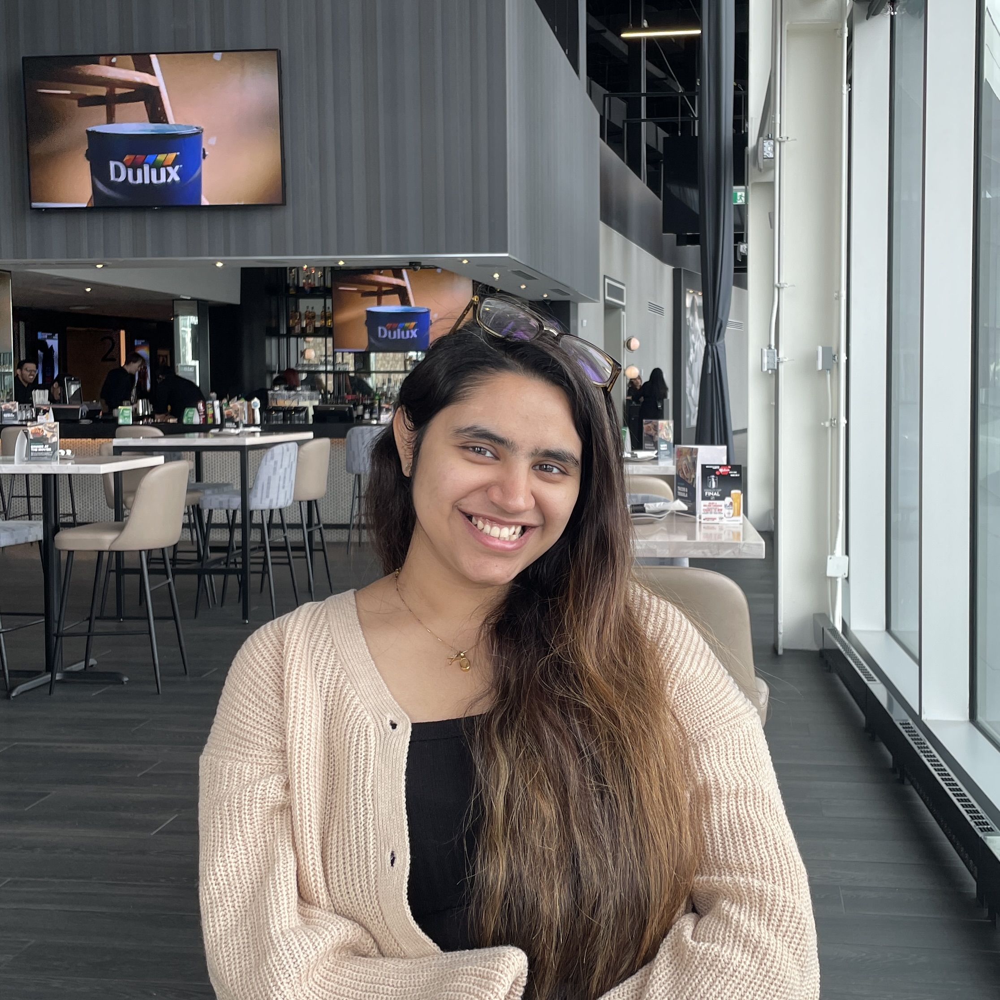

UX/UI designer based in Vancouver — research-first, technically literate, and targeting full-time roles for fall 2026.

A few things about me
Who I am
I'm a UX/UI designer at SFU studying Interactive Arts & Technology, with a concentration in Interaction Design and a foundation in frontend development. That combination — research brain, build instinct — is what I bring to every project.
I got into UX because I kept encountering interfaces that looked polished but failed the person using them. I wanted to be someone who closed that gap. My approach is research-first by habit: I don't trust my first idea, I test it. And because I can read and write code, I design things that actually survive contact with a developer's hands.
I'm drawn to messy, human problems — the kind where the real issue only surfaces after you've sat with a user for an hour. At Mastercard I worked across four countries and learned that designing for 15,000 people means designing for fifteen different mental models at once. That's the work I want more of.
Right now
Discovered that the best design decisions aren't opinions — they're hypotheses tested against real user behavior. Started building fluency in Figma, usability testing, and information architecture while studying at SFU. Realized design isn't about making things look good. It's about making things work.
Moved from designing for imagined users to designing for real ones. Ran first structured usability tests, conducted contextual interviews, and learned to translate messy qualitative data into clear design decisions. The biggest lesson: the best solution is almost never your first idea.
Interned at Mastercard's Vancouver Tech Hub, redesigning internal SharePoint platforms for 15,000+ global employees. Worked directly under the VP of Workplace Experience, ran cross-cultural research across Dublin, India, and the US, and learned how to ship UX at enterprise scale — within real business constraints.
Led the design and development of Chemtrails, a full-stack mobile travel app built in React Native with Firebase. Went from user interviews to shipped product — handling UX research, interaction design, and front/backend development. Proved that design thinking and technical execution aren't separate skills.
Deliberately stepping outside the digital. Attending startup events, design jams, and design festivals — finding that the best design thinking happens in rooms with people, not just in Figma files. Exploring how design principles translate across architecture, physical products, and service experiences. The more I study how a building moves people through space, or how a service touchpoint makes someone feel, the sharper my digital work gets.
I'm always open to discussing new projects, creative ideas, or opportunities to be part of your visions.